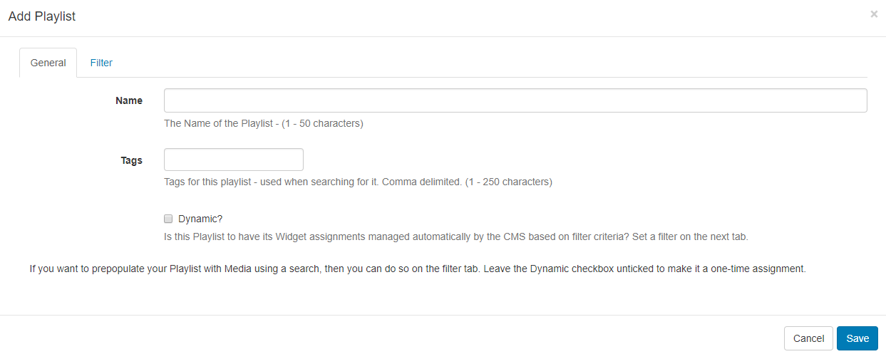
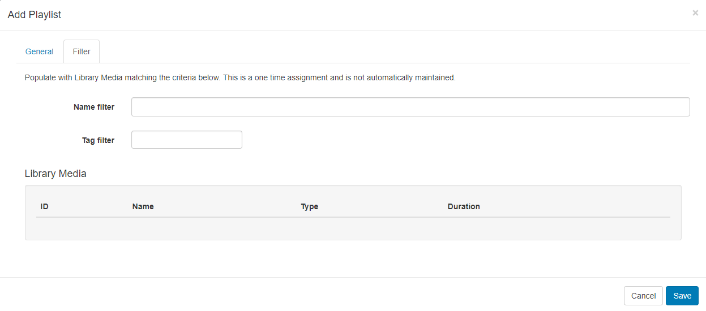
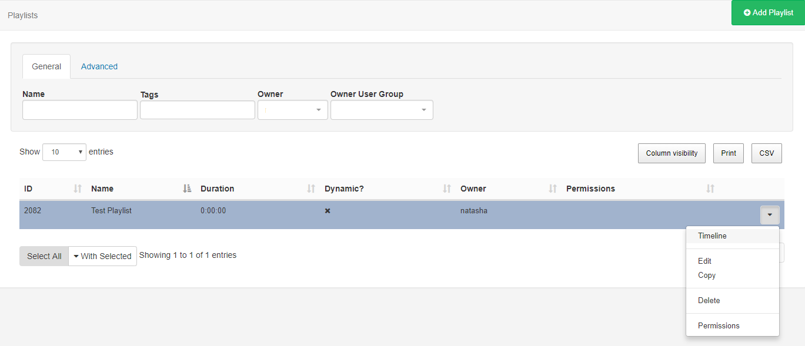
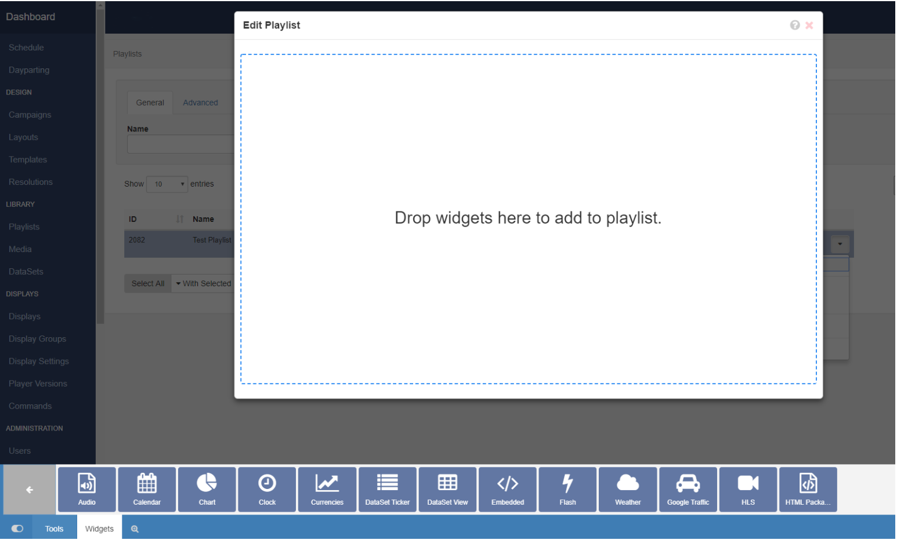
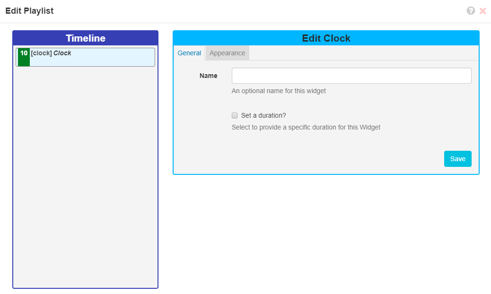
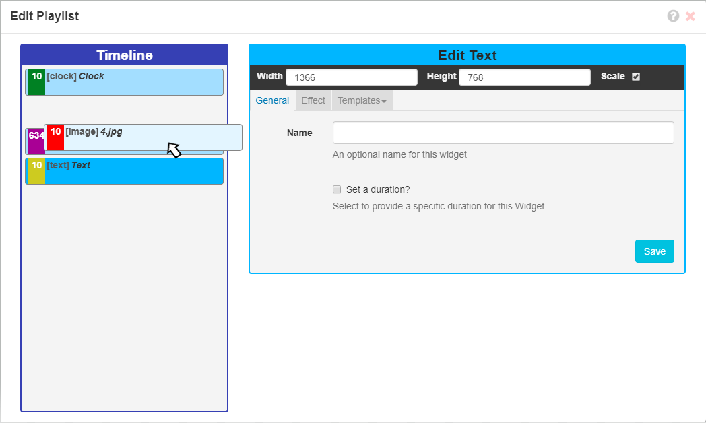
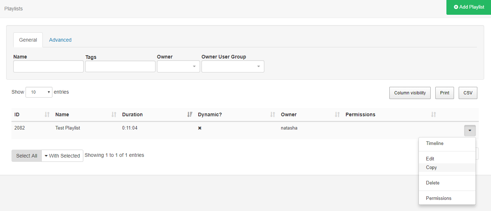
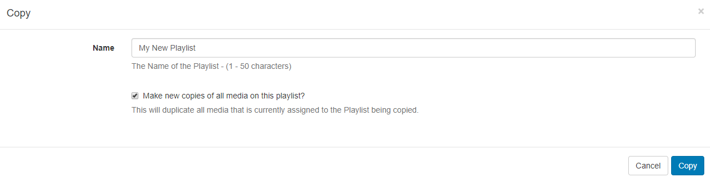

Playlists (New Features for v2)
Playlists allow for the creation of reusable playlists which can be easily added to Layouts and come in two parts:
- The Playlist (contains the media content and configuration)
- The Sub-Playlist Widget (allows for defined Playlists to be added to Layouts)
Playlists are first defined, which can then be reused across multiple Regions and Layouts. Access by navigating to Playlists under the Library section of the menu to view the Playlists grid where you can add new and manage existing Playlists.
Click on the Add Playlist button and complete the form fields:

If you require media assignments to be managed automatically then tick the Dynamic check box and set the filter criteria to use for Library media on the Filter tab.

You can prepopulate your playlist with media from the Library using the Filter tab, but leaving the Dynamic checkbox unticked to make it a one-time assignment.
Once added use the row menu for your created Playlist and click on Timeline.

Click on a Widget or drag and drop to add to the playlist.

Use the Library Search tab to add media already uploaded to the Library.
Once added configure using the Edit options available.

For further information on the Edit options available please refer to the relevant manual page for the chosen Widget.
Change the playlist Timeline order by clicking on an item and dragging it to the desired positioning. As changes are autosaved use the Undo button, located on the bottom right of the toolbar to revert any changes made.

Use the Tools tab to apply Actions such as Audio/Permissions and Expiry Dates to the items added to the timeline.
Easily make copies of Playlists by using the Copy button from the row menu.

Use the tick box to make new copies of all media assigned to the original playlist so that you can make adjustments as needed to create a new Playlist.

Include pre-defined Playlists by adding the Sub-Playlist Widget to Layouts.